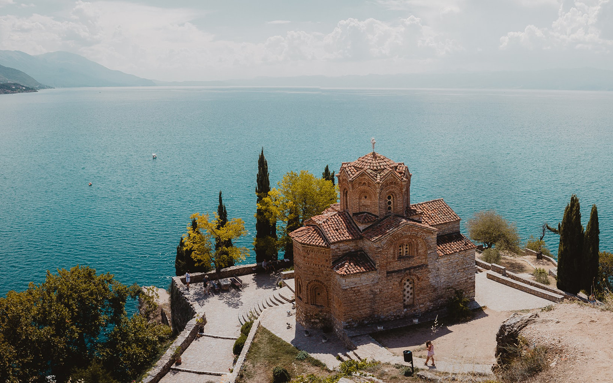
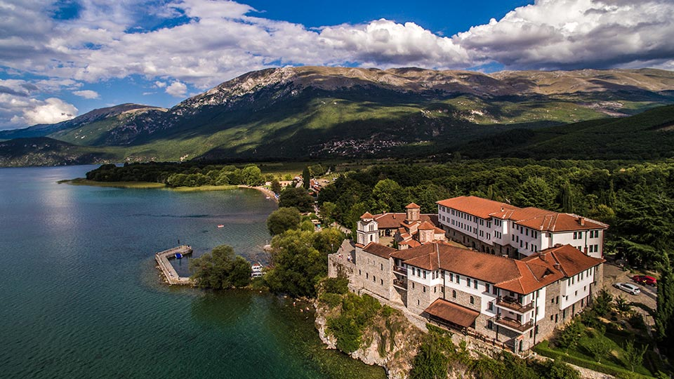
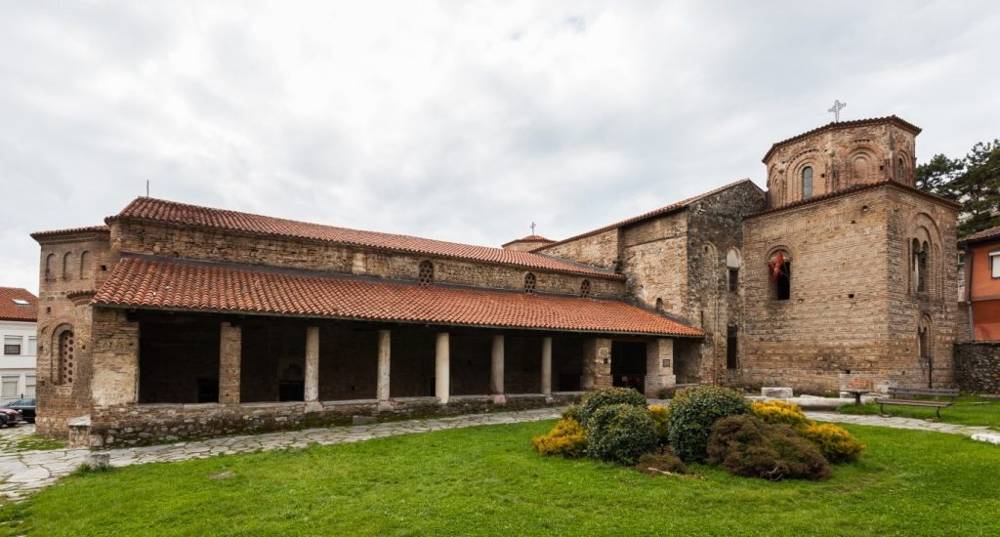
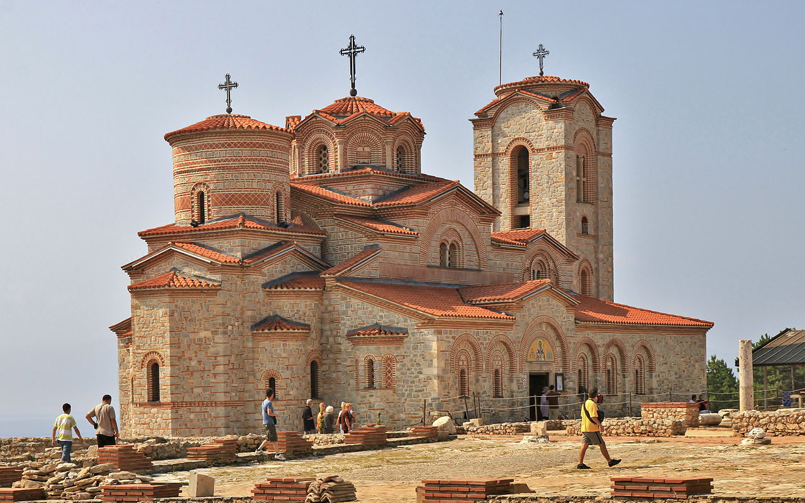
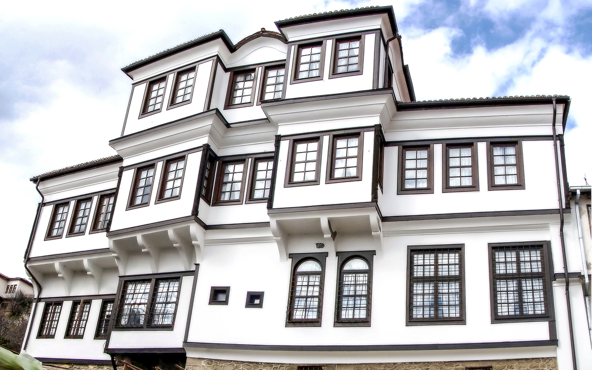
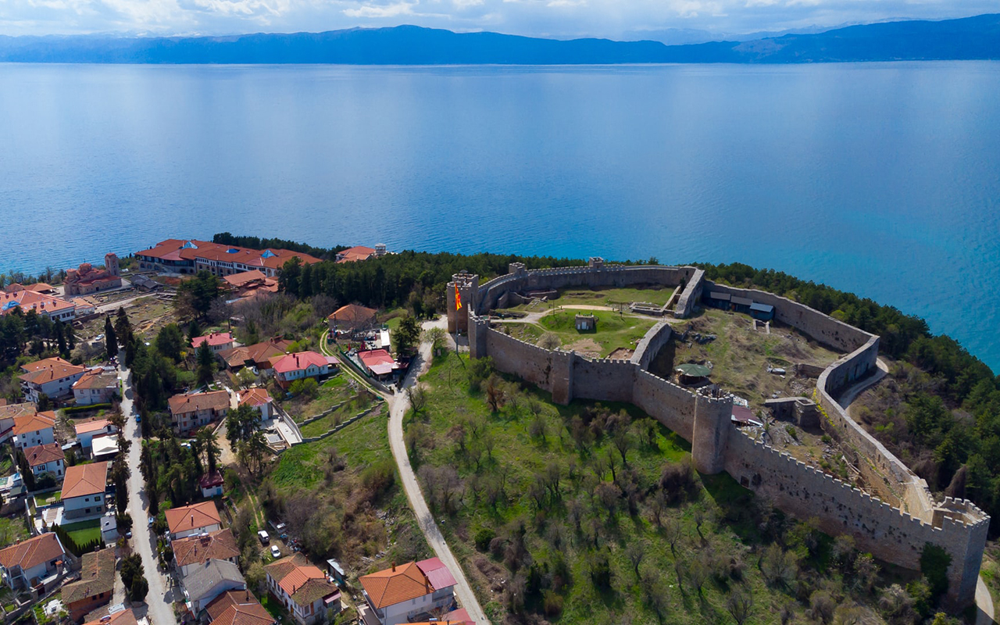
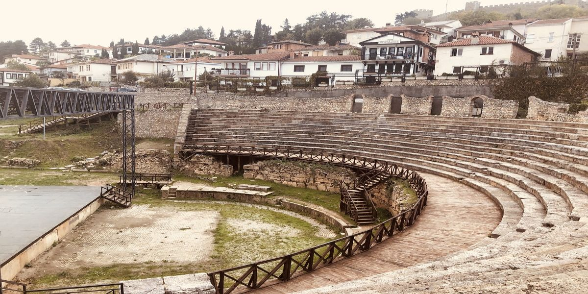
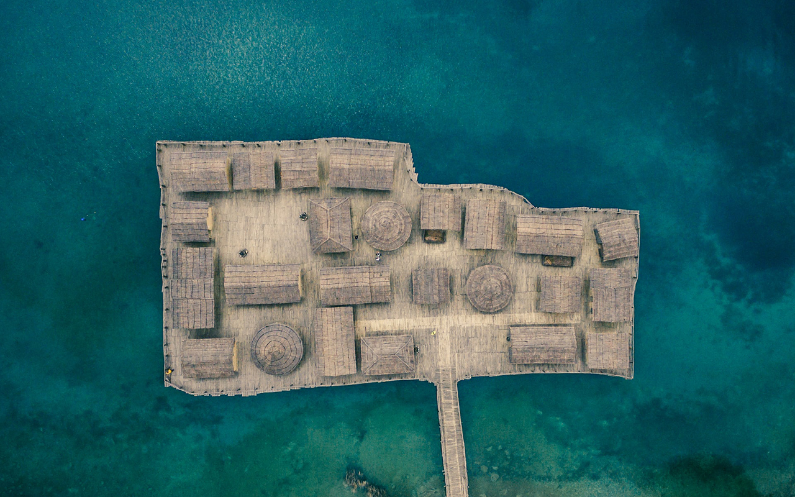
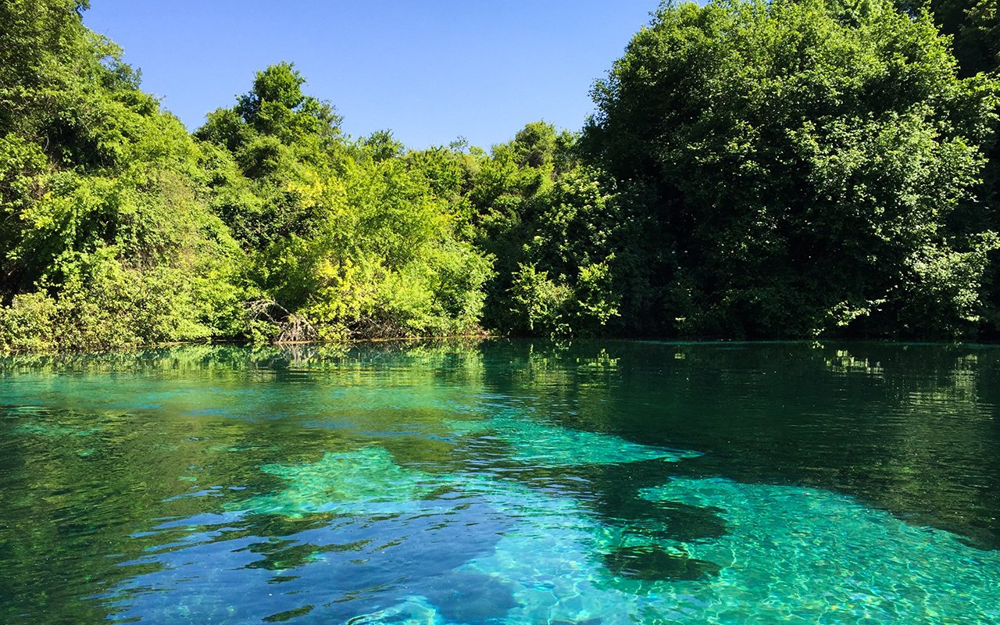

Охрид - град во југозападниот дел на Македонија, познат како Балкански и Европски Ерусалим поради големиот број на цркви и манастири.
Охрид е познат и како „град на светлината“, што претставува буквален превод на неговото старо име, Лихнид.
Охридскиот регион е вклучен во светското наследство на УНЕСКО.
Охридско Езеро — најголемо и најзначајно природно езеро во Македонија, најстаро во Европа и, од биолошки аспект,
најзначајниот стагнантен воден екосистем на континентот. Се карактеризира со богата историја, културa, археолошки наоѓалишта и
природна убавина, и го делат две држави: Македонија и Албанија.
Благодарение на ваквите особености, во 1980 година Охридското Езеро и градот Охрид се прогласени за Светско културно наследство,
под заштита на УНЕСКО. Светската важност на езерото се потврдува во 2010 г. кога НАСА и Меѓународниот астрономски сојуз решаваат
едно од езерата на Сатурновата месечина Титан да го носи името „Охридско Езеро“ (лат. Ohrid Lacus).
Езерото е лоцирано во југозападниот дел на Македонија, старо е меѓу 4 и 10 милиони години, и со тоа е најстаро на нашиот континент.
Површината изнесува 358,2 km2.
Охрид и Охридското Езеро се едни од главните туристички места во Македонија.
„Свети Јован Богослов Канео“ — една од најпознатите цркви во Охрид, на карпестиот рид над плажата Канео во стариот дел на градот.
Легендата вели: Охрид имал 365 цркви, по една за секој ден од годината.
Сите се со своја убавина, но Св. Јован Богослов е најмистичната и најфотогеничната.
Точниот датум за тоа кога црквата била изградена не е познат. Сепак, при анализирањето на иконографијата и архитектурата,
се претпоставува дека црквата била изградена на крајот од 1200-тите и средината на 1300-тите.
Гледано од иконографски аспект, оваа црква обезбедува голем број на информации за историјата на средновековното сликарство во Македонија.
Според иконографските одлики се поврзува со традицијата од уметноста на Комнените.
Црквата има посебно нагласена модификација на комненските елементи, што помага за поблиско определување на хронологијата.

2. Манастир Св. Наум
Свети Наум Охридски црквата ја подигнал во 900 година и ја посветил на Светите архангели Михаил и Гаврил.
Во 910 година, по смртта, Свети Наум бил погребан во малата капела во црквата.
Капелата е украсена со прекрасни фрески со сцени од животот и чудата на Свети Наум.
Подоцна, во времето на турското владеење, црквата била целосно разурната.
Денешната црква била изградена во неколку фази во периодот помеѓу XVI и XVII век врз темелите на старата црква.
Во црквата денес не е сочувана фреско-декорацијата од X век, а постојните фрески биле насликани во 1806 година.
Друг карактеристичен елемент во црквата е нејзиниот иконостас во позлатена резба, изработен во 1711 година, заедно со повеќето икони.

3. Црква Св. Софија
Света Софија — катедрала во стариот дел на градот Охрид во југозападниот дел на Република Македонија.
Посветена е на Христос како Божествена Премудрост т.е. Св. Софија.
Оваа црква представува еден од најзначајните знаменитости во Македонија со нејзината средновековна архитектура и фрески.
Ова е една од најголемите средновековни цркви на овие простори. Во еден долг временски период таа била соборна црква на
Охридската архиепископија, која својата црковна власт ја протегала на територијата на север од Дунав, до албанските брегови на
запад и до Солунскиот Залив на исток.
Покрај нејзиното значење како знаменитост, внатрешноста на црквата и нејзиниот двор и колонада претставуваат важно место
за одржување на културни збиднувања како концерти и драмски претстави.

4. Плаошник
Манастирската црква "Свети Пантелејмон" ја изградил свети Климент Охридски кон 893 година.
Плаошник уште во старохристијанскиот период бил многу почитуван простор.
Тука имало голема поликонхална црква и уште една петобродна базилика, двете со крстилници откриени во поново време.
После варварските пустошења и потреси, старата триконхална црква ја обновил св. Климент.
Таа се истакнувала со своите сладни кружни форми со браниден план. Кон основното јадро додал и притвор, а потоа и нови градби на запад,
север и југ. Тука, и во манастирскиот комплекс што се разил во идните векови, св. Климент започнал голема просветителска и книжевна
дејност (Охридската книжевна школа), се развил Првиот словенски универзитет откаде се ширеле словенската писменост, уметност и култура.
Светиклиментовата црква потоа била обновувана и живописувана (XIII - XIV/XV век) на истите темели. Така функционирала до крајот на XV век
кога манастирската црква и сите конаци се урнати од еден висок османлиски судски офицер којшто врз ѕидовите на црквата подигнал исламски
објект - Султан Мехмед џамија. Овој објект функционирал некое време, за потоа да биде оставен на милост и немилост на времето.

5. Куќата на Робевци
Куќата на Робевци во Охрид, во која денес е сместен Археолошкиот музеј и етнолошката поставка,
се смета за едeн од најрепрезентативните објекти на градската архитектура во Македонија,
која својот највисок развој го достигнува во текот на XIX век.
Нејзините проучувачи ја опишуваат како пример на конструктивна виртуозност,
со потенцирана динамика на волумените компонирани хармонично во единствена целина.
Во третманот на надворешноста на објектот, како и во димензионирање на просториите и нивната обработка,
е забележлива желбата на сопствениците кон истакнување на нивната економска моќ.
Куќата е заштитен споменик на културата и ја сочинуваат три ката, плус најгорниот кат т.н. "ширван".
Во долниот дел се наоѓаат изложени епиграфски споменици од Охрид и околината, како и вредните експонати:
"Миљоказ" (пронајден на патот Виа Игнација), двете торза на божицата Изида и др.
Археолошките експонати датирани од праисторијата до средновековниот период се изложени и на вториот и третиот кат.

6. Самуилова тврдина
Самуиловата тврдина — средновековна тврдина во градот Охрид, првично изградена од кралот Филип II Македонски,
а подоцна наречена по средновековниот цар Самуил.
Највисокиот дел од Охрид е опфатен со централните ѕидови кои се високи од 10 до 16 метри како и одбранбени кули.
Еден крај од надворешниот бедем косо се спушта кон запад до брегот на месноста Лабино.
Другиот крак тргнувајќи на исток ја преминува надворешната порта „Горна порта" ја зафаќа пониската височинка од Охридскиот рид
во месноста Дебој и отука кон југ косо се спушта кон езерото.
Тврдината носи видливи траги на чести поправки. Под делумно урнатиот надворешен слој во внатрешните ѕидови
се забележуваат хоризонтални либажни слоеви од тули со византиски формат.Во ѕидовите на горната порта вѕидани се многу камења
со грчки натписи кои потекнуваат од античките згради со какви што овој терен е преполнет. Охридската тврдина денес претставува
заштитен знак на Охрид а со тоа и на Македонија на неа се впишани многу страници од историјата и културата на македонскиот јазик
низ вековите, што претставува непроценлив културен извор за нашата Република.

7. Антички театар
Античкиот театар е лоциран во подножјето на источната косина на повисокиот охридски рид, под Самоиловата крепост,
во непосредна близина на еден од главните влезови во утврдениот град-Горна Порта, од каде што се доловува незаборавна глетка
на Охридското Езеро и на планините што го опкружуваат.
Бил изграден пред повеќе од два милениуми, некаде на крајот на III или почетокот на II век,
во периодот на доцнежниот хеленизам и бил наменет за прикажување на драмски, музички и поетски претстави на љубителите
на театарската уметност.
Бил граден по угледот на прочуените грчки камени градби од овој вид,
со богата архитектонска декорација, особено на театарската зграда која што била украсена со фриз од барелјефни плочи на
кои биле вклесани сцени од животот на боговите. На две такви мермерни плочи, кои денес се чуваат во Охридскиот музеј,
претставен е богот Дионис во друштво со Музите.

8. Заливот на коските
Залив на Коските — залив во Охридското Езеро и археолошко наоѓалиште на праисториска наколна населба од доцнобронзеното и
раножелезното време. Сместен е до полуостровот и автокампот Градиште, меѓу селата Пештани и Трпејца. Длабок е 3 до 5 метри.
Местото е наречено „Плоча Миќов Град“ и денес има реконструкција на наколните живеалишта (Музеј на вода „Залив на Коските“)
и платформи, како и свој посетителски центар со изложбен простор за наодите. Над него се издига обновено римско утврдување (каструм)
со воени објекти од тоа време, во наоѓалиштето наречено Градиште.
Најблискиот колец од вкупно 6.000 откриени е на 12 метри во езерото, со што се претпоставува дека е тоа колец од мостот
што ја спојувал населбата. Се претпоставува дека се простирала на платформа од околу 8.500 м2, а на неа имало можеби и 60-ина живеалишта.
На местото се откриени многу остатоци од орудија, предмети од керамика, дрво, од камен и делови од животни како еленски рогови.
Наколните населби биле градови правени на платформи, кои стоеле на дрвени колци забодени на дното на езерото.
На тие наколни платформи се наоѓале куќите на праисториските луѓе, кои со подвижен мост биле споени со брегот.
Жителите на овие населби се занимавале најмногу со риболов, но и со земјоделство и лов. На ова укажуваат разните садови
и предмети од керамика и камен пронајдени и на суво и под вода.

9. Изворите на Црн Дрим
Ако некогаш Охридската убавина ве понесе на патот кон ова место на вечна уметничка и природна ризница,
завршете го вашето патување со прошетка во Св. Наум. Таму, во непосредна близина на овој чудесен манастир,
широко се разлеваат обилните извори на реката Црн Дрим. Овие води доаѓаат од Преспанското Езеро преку подземните варовити канали
во подножјето на планината Галичица. Се состојат од 30 подводни и 15 крајбрежни извори, со вкупен капацитет од околу 7,5 метри кубни
во секунда. На изворите се формираат во мало езерце со површина од 30 хектари и длабочина од 3,5 метри. Температурата на кристално
бистрата вода никогаш не преминува 11 степени, но на црните водни желчиња и охридската пастрмка таа воопшто не им пречи, како ни на
лебедите, дивите патки и дивите кокошки. Езерцето во текот на своето постоење формирало и две мали атрактивни островчиња.
Постои верување дека доколку фрлите паричка во изворите од мостот поставен на брегот кај Св. Наум, вашата желба ќе се исполни.
Вегетацијата на изворите е многу бујна и разновидна, модро-зелена од алгите кои оставаат импресивна глетка пријатна за очите.
Регенерацијата на алгите е постојана и дава чувство на природен аквариум. Околу изворите има три прекрасни цркви,
Пресвета Богородица, Св. Атанасие и Св. Петка. Велат дека водата која извира под црквата Св. Петка има лековита моќ за очите.

10. Национален парк "Галичица"
Од Национален парк Галичица се протегаат мошне убави глетки на Охридско езеро и Преспанско езеро.
Посебно е атрактивна можноста посетителите во исто време да ги набљудуваат двете прекрасни езера.
Пејсажните атрактивни, естетски и куриозитетни вредности се однесуваат и на самите планински страни, кои Галичица ги поседува.
Во југозападниот дел на Македонија, налик на пречник што ги изделува Охридското и Преспанското Езеро,
се простира прекрасната планина Галичица. Дел од планината претставува Национален парк Галичица,
а заедно со градот Охрид и езерото, ставена е под заштита на УНЕСКО.
Интересно е што Галичица е карстна планина, маркантна во географската средина со својата импозантна големина.
Највисокиот врв Магаро се наоѓа на надморска височина од 2.254 метри. Теренот има голема застапеност на реликтни растенија,
при што 11 растителни видови може да се сретнат само на ова место, а регистрирани се и 26 ендемични животински видови.
Тоа се должи на големото количество дожд во текот на годината. Посебно фрапантна е бројката на пеперутките – 1644 видови на
толку мал простор.